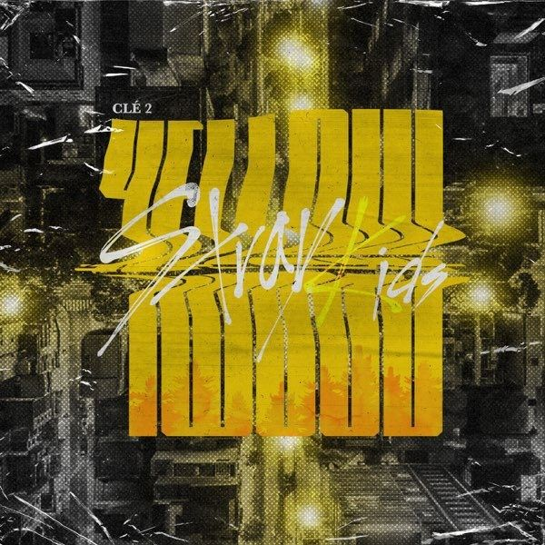
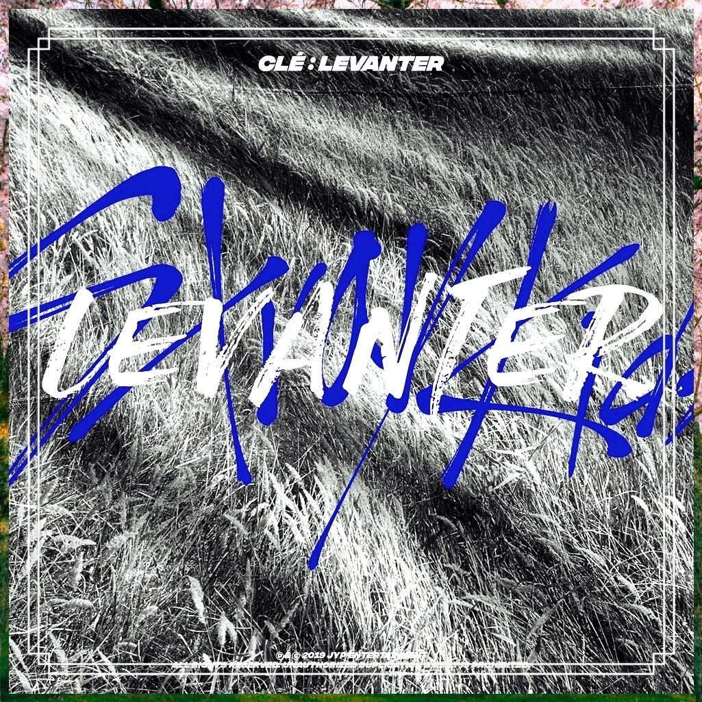

|
 |
En 2019, Stray Kids presentó la trilogía Clé, simbolizando la idea de una llave que abre nuevas puertas.
Clé 1: MIROH llegó el 25 de marzo y les dio su primera victoria en un programa musical surcoreano gracias al tema "Miroh".
Le siguió Clé 2: Yellow Wood el 19 de junio, con "Side Effects" como sencillo principal. El año cerró con un momento difícil: la salida de Woojin del grupo en octubre. A pesar de ello, los ocho integrantes restantes continuaron adelante y lanzaron Clé: LEVANTER el 9 de diciembre, cerrando así el capítulo de la "llave" con una nueva etapa como equipo de ocho. |
| Periodo | Marzo - Diciembre 2019 |
| Clé 1: MIROH | 25 de marzo de 2019 - "Miroh" |
| Clé 2: Yellow Wood | 19 de junio de 2019 - "Side Effects" |
| Clé: LEVANTER | 9 de diciembre de 2019 - "Levanter" y "Double Knot" |
